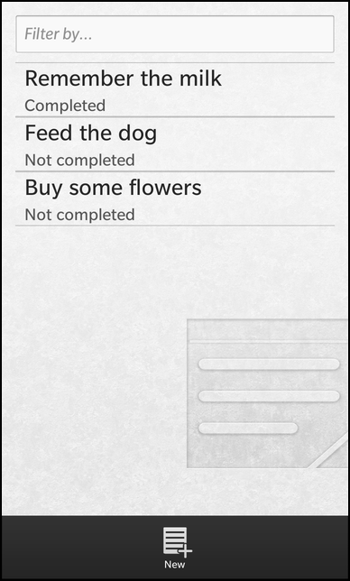
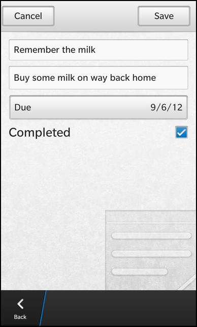

Notebook Example
Files:
- pim/notebook/assets/NoteEditor.qml
- pim/notebook/assets/NoteViewer.qml
- pim/notebook/assets/ViewerField.qml
- pim/notebook/assets/main.qml
- pim/notebook/src/NoteBook.cpp
- pim/notebook/src/NoteBook.hpp
- pim/notebook/src/NoteEditor.cpp
- pim/notebook/src/NoteEditor.hpp
- pim/notebook/src/NoteViewer.cpp
- pim/notebook/src/NoteViewer.hpp
- pim/notebook/src/main.cpp
- pim/notebook/notebook.pro
- pim/notebook/translations/notebook.pro
Description
The Notebook example is a simple notebook application to list, view, edit and delete the notes available on the system or create new ones.



Overview
In this example we'll learn how to use the bb::pim::notebook API of the BB10 framework to work with the notes available on the system.
The application has a clean separation between business logic and UI representation. All the business logic is encapsulated inside the three C++ classes NoteBook, NoteViewer and NoteEditor. These classes use the bb::pim::notebook API internally to communicate with the notebook service of BB10 and provide all the necessary functionality and data to the UI via properties, signals and slots. The NoteBook object is exported to the UI under the name '_noteBook'.
The UI
The UI of this sample application consists of four pages:
- The main page
- The 'view note' page
- The 'edit note' page
- The 'create new note' page
The main page
The main page contains a ListView that displays a list of notes and a TextField where the user can type in a text which is used as filter criterion for the list.
// The note list filter input TextField { hintText: qsTr ("Filter by...") onTextChanging: _noteBook.filter = text }
Whenever the content of the TextField is changed by the user, the 'filter' property of the exported NoteBook object is updated.
// The list view with all notes ListView { dataModel: _noteBook.model listItemComponents: ListItemComponent { type: "item" StandardListItem { title: ListItemData.title description: ListItemData.status } } onTriggered: { clearSelection() select(indexPath) _noteBook.setCurrentNote(indexPath) _noteBook.viewNote(); navigationPane.push(noteViewer.createObject()) } }
The ListView uses the model provided by the NoteBook object as data model and shows the title and status properties inside the items.
Whenever the user clicks on an item, setCurrentNote() is called on the NoteBook object, which will mark the selected note as the 'current' note for viewing and editing. Afterwards the viewNote() method is invoked on the NoteBook object. This will setup the NoteViewer object to make the data of the current note available to the 'view note' page. Finally, the 'view note' page is pushed on the NavigationPane.
attachedObjects: [ ComponentDefinition { id: noteEditor source: "NoteEditor.qml" }, ComponentDefinition { id: noteViewer source: "NoteViewer.qml" } ]
This page is loaded dynamically from a ComponentDefinition that references the file NoteViewer.qml
The main page also contains an ActionItem inside its action bar, which can be invoked by the user to create a new note.
actions: [ ActionItem { title: qsTr ("New") imageSource: "asset:///images/action_addnote.png" ActionBar.placement: ActionBarPlacement.OnBar onTriggered: { _noteBook.createNote() navigationPane.push(noteEditor.createObject()) } } ]
When the action is triggered, the createNote() method is invoked on the NoteBook object, which will setup the NoteEditor object to be in creation mode. Afterwards the 'create new note' page is pushed on the NavigationPane. This page is loaded dynamically from a ComponentDefinition that references the file NoteEditor.qml.
The 'view note' page
The 'view note' page is implemented inside NoteViewer.qml and retrieves all the data to display from the NoteViewer object, which is accessible as a property of the NoteBook object.
ViewerField { horizontalAlignment: HorizontalAlignment.Fill title: qsTr ("title") value: _noteBook.noteViewer.title } ViewerField { horizontalAlignment: HorizontalAlignment.Fill topMargin: 50 title: qsTr ("description") value: _noteBook.noteViewer.description }
The UI of the page consists of a list of ViewerField objects (which are implemented in ViewerField.qml), one for each note property (title, description, due date and status). These fields simply display a title text and a value text in a row. While the title texts are hard-coded, the value properties are bound against the properties provided by the NoteViewer object. So whenever the note that is currently handled by the NoteViewer is changed, the UI will be updated automatically.
actions: [ ActionItem { title: qsTr ("Edit") imageSource: "asset:///images/action_editnote.png" onTriggered: { _noteBook.editNote() navigationPane.push(noteEditor.createObject()) } }, DeleteActionItem { onTriggered: { _noteBook.deleteNote() navigationPane.pop() } } ]
To edit or delete the currently displayed note, the page contains two ActionItems. If the one for deleting the note is triggered, the deleteNote() method is invoked on the NoteBook object, which will call the appropriated methods on the bb::pim::notebook API internally. If the action for editing the note is triggered, the editNote() method is invoked on the NoteBook object, which will setup the NoteEditor object to be in editing mode and make the data of the current note available to the 'edit note' page. Afterwards the 'edit note' page is pushed on the NavigationPane.
attachedObjects: [ ComponentDefinition { id: noteEditor source: "NoteEditor.qml" } ]
The 'edit note' page is loaded dynamically from a ComponentDefinition that references the file NoteEditor.qml.
The 'edit note' and 'create new note' page
For creating a new note or editing an existing one the same UI (NoteEditor.qml) is used. The underlying business object NoteEditor provides the property 'mode' to differ between the CreateMode and EditMode.
The page contains two actions in its TitleBar to create/save the current note or cancel the operation.
titleBar: TitleBar { id: pageTitleBar // The 'Create/Save' action acceptAction: ActionItem { title: (_noteBook.noteEditor.mode == NoteEditor.CreateMode ? qsTr ("Create" ) : qsTr ("Save")) onTriggered: { _noteBook.noteEditor.saveNote() navigationPane.pop() } } // The 'Cancel' action dismissAction: ActionItem { title: qsTr ("Cancel") onTriggered: navigationPane.pop() } }
Depending on the current mode the title of the accept action is set to 'Create' or 'Save'. In both cases, an invocation of the action will call the saveNote() method on the NoteEditor object, which will do the right thing internally, depending on the current mode.
If the user selects the dismiss action, the current page is popped from the NavigationPane.
TextField { id: titleField hintText: qsTr ("Title") onTextChanging: _noteBook.noteEditor.title = text }
For each property of a note, the page contains an editor field (e.g. a TextField for the title). Whenever the user changes the content of the field, the associated property of the NoteEditor object will be updated.
If the UI is in EditMode, the content of the editor fields is initialized with the values from the NoteEditor object after the UI has been created.
onCreationCompleted: { if ( _noteBook.noteEditor.mode == NoteEditor.EditMode) { // Fill the editor fields after the UI has been created titleField.text = _noteBook.noteEditor.title descriptionField.text = _noteBook.noteEditor.description dueDateTimeField.value = _noteBook.noteEditor.dueDateTime completedField.checked = _noteBook.noteEditor.completed } }
The Business Logic
To have a clean separation between business logic and UI, the business logic is implemented in the three C++ classes NoteBook, NoteViewer and NoteEditor.
NoteBook
The NoteBook class is the central point to access the business logic from within the UI. Therefor the object is exported to QML under the name '_noteBook' inside the main function.
// Load the UI description from main.qml QmlDocument *qml = QmlDocument::create("asset:///main.qml").parent(&app); // Make the NoteBook object available to the UI as context property qml->setContextProperty("_noteBook", new NoteBook(&app));
The NoteBook object provides the list of available notes as a custom property 'model' of type bb::cascades::GroupDataModel, so that a ListView in the UI can use it directly as its data model. Additionally the NoteBook object provides a 'filter' property to define a filter string that is applied on the list of notes. The other two business logic objects NoteViewer and NoteEditor can be accessed through the 'noteViewer' and 'noteEditor' properties.
class NoteBook : public QObject { Q_OBJECT // The model that provides the filtered list of notes Q_PROPERTY(bb::cascades::GroupDataModel *model READ model CONSTANT); // The pattern to filter the list of notes Q_PROPERTY(QString filter READ filter WRITE setFilter NOTIFY filterChanged); // The viewer object for the current note Q_PROPERTY(NoteViewer* noteViewer READ noteViewer CONSTANT); // The editor object for the current note Q_PROPERTY(NoteEditor* noteEditor READ noteEditor CONSTANT); public: NoteBook(QObject *parent = 0); public Q_SLOTS: /** * Marks the note with the given @p indexPath as current. */ void setCurrentNote(const QVariantList &indexPath); /** * Prepares the note editor to create a new note. */ void createNote(); /** * Prepares the note editor to edit the current note. */ void editNote(); /** * Prepares the note viewer to display the current note. */ void viewNote(); /** * Deletes the current note. */ void deleteNote(); Q_SIGNALS: // The change notification signal for the property void filterChanged(); private Q_SLOTS: // Filters the notes in the model according to the filter property void filterNotes(); private: // The accessor methods of the properties bb::cascades::GroupDataModel* model() const; QString filter() const; void setFilter(const QString &filter); NoteViewer* noteViewer() const; NoteEditor* noteEditor() const; // The central object to access the notebook service bb::pim::notebook::NotebookService* m_notebookService; // The property values bb::cascades::GroupDataModel* m_model; QString m_filter; // The controller object for viewing a note NoteViewer* m_noteViewer; // The controller object for editing a note NoteEditor* m_noteEditor; // The ID of the current note bb::pim::notebook::NotebookEntryId m_currentNoteId; };
To use the NoteViewer and NoteEditor objects as property types, they must be registered to the QML type system inside the main function as well.
// Register our custom types with QML, so that they can be used as property types qmlRegisterUncreatableType<NoteEditor>("com.example.bb10samples.pim.notebook", 1, 0, "NoteEditor", "Usage as property type and access to enums"); qmlRegisterType<NoteViewer>();
Inside the constructor all member objects are initialized. The NotebookService is the central point of the bb::pim::notebook API to access note information on the BB10 platform.
NoteBook::NoteBook(QObject *parent) : QObject(parent) , m_notebookService(new NotebookService(this)) , m_model(new GroupDataModel(this)) , m_noteViewer(new NoteViewer(m_notebookService, this)) , m_noteEditor(new NoteEditor(m_notebookService, this)) { // Disable grouping in data model m_model->setGrouping(ItemGrouping::None); // Ensure to invoke the filterNotes() method whenever a note has been added, changed or removed connect(m_notebookService, SIGNAL(notebookEntriesAdded(QList<bb::pim::notebook::NotebookEntryId>)), SLOT(filterNotes())); connect(m_notebookService, SIGNAL(notebookEntriesUpdated(QList<bb::pim::notebook::NotebookEntryId>)), SLOT(filterNotes())); connect(m_notebookService, SIGNAL(notebookEntriesDeleted(QList<bb::pim::notebook::NotebookEntryId>)), SLOT(filterNotes())); // Fill the data model with notes initially filterNotes(); }
The filterNotes() method retrieves all notes that match the specified filter from the NotebookService and fills the data model with the result. The ID of the note is stored inside the model together with the data that will be displayed in the ListView.
void NoteBook::filterNotes() { NotebookEntryFilter filter; // Use the entered filter string as search string filter.setSearchString(m_filter); const QList<NotebookEntry> notes = m_notebookService->notebookEntries(filter); // Clear the old note information from the model m_model->clear(); // Iterate over the list of notes foreach (const NotebookEntry ¬e, notes) { // Copy the data into a model entry QVariantMap entry; entry["noteId"] = QVariant::fromValue(note.id()); entry["title"] = note.title(); entry["status"] = NoteViewer::statusToString(note.status()); // Add the entry to the model m_model->insert(entry); } }
Whenever the user changes the filter criterion, the setFilter() method is invoked, which updates the filter value and calls the filterNotes() method again.
void NoteBook::setFilter(const QString &filter) { if (m_filter == filter) return; m_filter = filter; emit filterChanged(); // Update the model now that the filter criterion has changed filterNotes(); }
Whenever the user selects a note in the ListView, the setCurrentNote() method is invoked. If the selected index path is valid, the ID of the note is extracted and stored as 'current' note.
void NoteBook::setCurrentNote(const QVariantList &indexPath) { // Extract the ID of the selected note from the model if (indexPath.isEmpty()) { m_currentNoteId = NotebookEntryId(); } else { const QVariantMap entry = m_model->data(indexPath).toMap(); m_currentNoteId = entry.value("noteId").value<NotebookEntryId>(); } }
Afterwards the UI invokes the viewNote() method, that triggers the NoteViewer to load the data for the current note.
void NoteBook::viewNote() { // Prepare the note viewer for displaying the current note m_noteViewer->setNoteId(m_currentNoteId); }
If the user triggers the 'Delete' action from the 'view note' page, deleteNote() is invoked, which forwards this request to the NotebookService.
void NoteBook::deleteNote() { m_notebookService->deleteNotebookEntry(m_currentNoteId); }
If the user wants to edit the current note, the UI calls editNote(), which triggers the NoteEditor to load the data of the current note and switches the NoteEditor into EditMode.
void NoteBook::editNote() { // Prepare the note editor for editing the current note m_noteEditor->loadNote(m_currentNoteId); m_noteEditor->setMode(NoteEditor::EditMode); }
If the user wants to create a new note, the UI calls createNote(), which resets the NoteEditor and switches it into CreateMode.
void NoteBook::createNote() { // Prepare the note editor for creating a new note m_noteEditor->reset(); m_noteEditor->setMode(NoteEditor::CreateMode); }
NoteViewer
The NoteViewer class is an UI-independent representation of the note viewer, that provides all the functionality and data as slots and properties. It encapsulates all the logic of loading a note from the persistent storage, provides its data as properties and updates the properties automatically if the note has changed in the storage backend.
class NoteViewer : public QObject { Q_OBJECT // The data properties of the note that is displayed Q_PROPERTY(QString title READ title NOTIFY titleChanged) Q_PROPERTY(QString description READ description NOTIFY descriptionChanged) Q_PROPERTY(QString dueDateTime READ dueDateTime NOTIFY dueDateTimeChanged) Q_PROPERTY(QString status READ status NOTIFY statusChanged) public: NoteViewer(bb::pim::notebook::NotebookService *service, QObject *parent = 0); // Sets the ID of the note that should be displayed. void setNoteId(const bb::pim::notebook::NotebookEntryId ¬eId); // A helper method to translate a note status into a user visible string static QString statusToString(bb::pim::notebook::NotebookEntryStatus::Type status); Q_SIGNALS: // The change notification signals of the properties void titleChanged(); void descriptionChanged(); void dueDateTimeChanged(); void statusChanged(); private Q_SLOTS: /** * This slot is invoked whenever the note service reports that a note has been changed. */ void noteChanged(const QList<bb::pim::notebook::NotebookEntryId> ¬e); private: // The accessor methods of the properties QString title() const; QString description() const; QString dueDateTime() const; QString status() const; // Loads the note from the persistent storage and updates the properties void updateNote(); // The central object to access the note service bb::pim::notebook::NotebookService* m_notebookService; // The ID of the note that is displayed bb::pim::notebook::NotebookEntryId m_noteId; // The property values QString m_title; QString m_description; QDateTime m_dueDateTime; bb::pim::notebook::NotebookEntryStatus::Type m_status; };
Inside the constructor the notebookEntryUpdated() signal of the NotebookService is connected against the custom noteChanged() slot to reload the currently displayed note from the persistent storage if it has been changed by some other entity.
NoteViewer::NoteViewer(NotebookService *service, QObject *parent) : QObject(parent) , m_notebookService(service) , m_status(NotebookEntryStatus::NotCompleted) { // Ensure to invoke the noteChanged() method whenever a note has been changed connect(m_notebookService, SIGNAL(notebookEntriesUpdated(QList<bb::pim::notebook::NotebookEntryId>)), SLOT(noteChanged(QList<bb::pim::notebook::NotebookEntryId>))); }
The method setNoteId() is invoked by the NoteBook object to prepare the viewer to display a note in the UI. In this method the passed ID is stored locally and updateNote() is called afterwards.
void NoteViewer::setNoteId(const NotebookEntryId ¬eId) { m_noteId = noteId; // Trigger a refetch of the note for the new ID updateNote(); }
Inside updateNote() the actual note data are loaded from the persistent storage through the NotebookService object. If the value of a note property has changed, the change notification signal is emitted.
void NoteViewer::updateNote() { // Store previous values const QString oldTitle = m_title; const QString oldDescription = m_description; const QDateTime oldDueDateTime = m_dueDateTime; const NotebookEntryStatus::Type oldStatus = m_status; // Fetch new values from persistent storage const NotebookEntry note = m_notebookService->notebookEntry(m_noteId); m_title = note.title(); m_description = note.description().plainText(); m_dueDateTime = note.dueDateTime(); m_status = note.status(); // Check whether values have changed if (oldTitle != m_title) emit titleChanged(); if (oldDescription != m_description) emit descriptionChanged(); if (oldDueDateTime != m_dueDateTime) emit dueDateTimeChanged(); if (oldStatus != m_status) emit statusChanged(); }
The custom slot noteChanged() checks whether the currently displayed note is in the change set and calls updateNote() accordingly.
void NoteViewer::noteChanged(const QList<NotebookEntryId> &entries) { /** * Call updateNote() only if the note we are currently displaying * has been changed. */ if (entries.contains(m_noteId)) updateNote(); }
NoteEditor
The NoteEditor class is an UI-independent representation of the note editor, that provides all the functionality and data as slots and properties. It encapsulates all the logic of creating a new note or updating an existing one.
class NoteEditor : public QObject { Q_OBJECT // The data properties of the note that is created or updated Q_PROPERTY(QString title READ title WRITE setTitle NOTIFY titleChanged) Q_PROPERTY(QString description READ description WRITE setDescription NOTIFY descriptionChanged) Q_PROPERTY(QDateTime dueDateTime READ dueDateTime WRITE setDueDateTime NOTIFY dueDateTimeChanged) Q_PROPERTY(bool completed READ completed WRITE setCompleted NOTIFY completedChanged) // Defines whether the editor is in 'create' or 'edit' mode Q_PROPERTY(Mode mode READ mode WRITE setMode NOTIFY modeChanged) Q_ENUMS(Mode) public: /** * Describes the mode of the note editor. * The mode information are used to adapt the behavior of the editor and * provide hints to the UI. */ enum Mode { CreateMode, EditMode }; NoteEditor(bb::pim::notebook::NotebookService *service, QObject *parent = 0); void setMode(Mode mode); Mode mode() const; public Q_SLOTS: /** * Loads the note with the given ID. */ void loadNote(const bb::pim::notebook::NotebookEntryId ¬eId); /** * Save the currently loaded note if in 'edit' mode or creates a new one * if in 'create' mode. */ void saveNote(); /** * Resets all fields of the note editor. */ void reset(); Q_SIGNALS: // The change notification signals of the properties void titleChanged(); void descriptionChanged(); void dueDateTimeChanged(); void completedChanged(); void modeChanged(); private: // The accessor methods of the properties void setTitle(const QString &title); QString title() const; void setDescription(const QString &description); QString description() const; void setDueDateTime(const QDateTime &dueDateTime); QDateTime dueDateTime() const; void setCompleted(bool completed); bool completed() const; // The central object to access the note service bb::pim::notebook::NotebookService *m_notebookService; // The ID of the currently loaded note (if in 'edit' mode) bb::pim::notebook::NotebookEntryId m_noteId; // The property values QString m_title; bb::pim::notebook::NotebookEntryDescription m_description; QDateTime m_dueDateTime; bool m_completed; Mode m_mode; };
Inside the constructor the member variables are initialized with the default values.
NoteEditor::NoteEditor(NotebookService *service, QObject *parent) : QObject(parent) , m_notebookService(service) , m_dueDateTime(QDateTime::currentDateTime()) , m_completed(false) , m_mode(CreateMode) { }
If the user wants to edit an existing note, the NoteBook object invokes loadNote() to load the note data from the persistent storage and make them available to the UI through the properties.
void NoteEditor::loadNote(const NotebookEntryId ¬eId) { m_noteId = noteId; // Load the note from the persistent storage const NotebookEntry note = m_notebookService->notebookEntry(m_noteId); // Update the properties with the data from the note m_title = note.title(); m_description = note.description(); m_dueDateTime = note.dueDateTime(); m_completed = (note.status() == NotebookEntryStatus::Completed); // Emit the change notifications emit titleChanged(); emit descriptionChanged(); emit dueDateTimeChanged(); emit completedChanged(); }
When the user clicks on the 'Create'/'Save' button in the UI, saveNote() is invoked. Depending on the current mode, a new note is created or the current one modified. For new notes, the default notebook is used as storage location.
void NoteEditor::saveNote() { if (m_mode == CreateMode) { NotebookEntry *note = new NotebookEntry; note->setTitle(m_title); note->setDescription(m_description); note->setDueDateTime(m_dueDateTime); note->setStatus(m_completed ? NotebookEntryStatus::Completed : NotebookEntryStatus::NotCompleted); // Save the note to persistent storage (always store in system default notebook) m_notebookService->addNotebookEntry(note, m_notebookService->defaultNotebook().id()); } else if (m_mode == EditMode) { // Load the note from persistent storage NotebookEntry note = m_notebookService->notebookEntry(m_noteId); if (note.isValid()) { // Update the single attributes note.setTitle(m_title); note.setDescription(m_description); note.setDueDateTime(m_dueDateTime); note.setStatus(m_completed ? NotebookEntryStatus::Completed : NotebookEntryStatus::NotCompleted); // Save the updated note back to persistent storage m_notebookService->updateNotebookEntry(note); } } }
If the user wants to create a new note, the NoteBook object invokes the reset() method to clear all fields of the NoteEditor.
void NoteEditor::reset() { // Reset all properties m_title.clear(); m_description = NotebookEntryDescription(); m_dueDateTime = QDateTime::currentDateTime(); m_completed = false; // Emit the change notifications emit titleChanged(); emit descriptionChanged(); emit dueDateTimeChanged(); emit completedChanged(); }